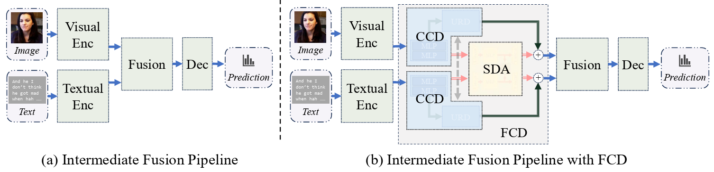
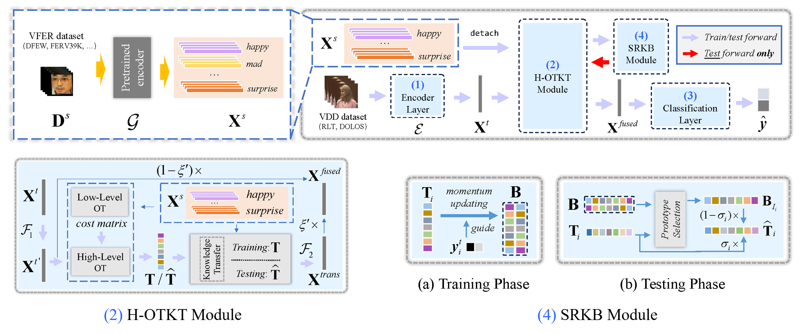
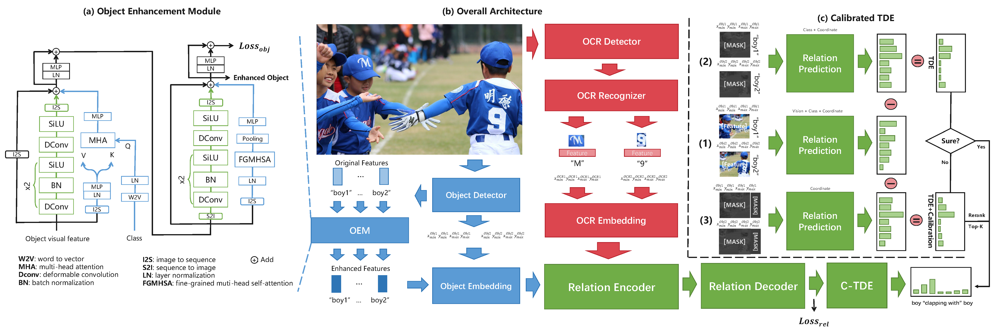

Zihan JI（冀子晗）
I am now a master's student at the School of Future Technology in South China University of Technology (SCUT). My research interests lie in the fields of multimodal representation learning, affective computing, transfer learning etc. I am supervised by Prof. Ye LIU and Prof. Xuetao TIAN (from Beijing Normal University).
In the future, I will pursue my PhD degree at Collage of Control Science and Engineering (CSE) in Zhejiang University (ZJU) under the supervision of Prof. Qi YE working on Embodied AI, Dexterous Manipulation, Multimodal (with tactile information) Representation Learning etc.
I achieved my bachelor's degree from Wuhan University of Technology (WHUT) in 2023, majoring in Artificial Intelligence. During my undergraduate studies, I received guidance from Prof. Anna ZHU and Prof. Xing LIU.


“I believe data science and artificial intelligence
will give us superpowers.”
Education
| Period | University | Major | Degree |
|---|---|---|---|
| 2026.09 - 2030.06 |
Zhejiang University
浙江大学, ZJU
|
Control Science and Engineering | PhD |
| 2023.09 - 2026.06 |
South China University of Technology
华南理工大学, SCUT
|
Information and Communication Engineering | Master |
| 2019.09 - 2023.06 |
Wuhan University of Technology
武汉理工大学, WHUT
|
Artificial Intelligence | Bachelor |
Papers
Annual Conference on Neural Information Processing Systems (NeurIPS 2025) CCF-A
Abstract
We propose a plug-and-play causal feature decomposition method for multimodal representation learning that disentangles modality-invariant and modality-specific features, removes redundant noisy components via backdoor adjustment, and fuses synergistic and unique information, improving robustness and performance across multimodal tasks.
Attachments: [OpenReview]
AAAI Conference on Artificial Intelligence (AAAI 2025) [Oral] CCF-A
Abstract
We propose AFFAKT, a knowledge transfer framework that improves video deception detection by leveraging large-scale facial expression data. Through optimal relation mapping and correlation prototypes, AFFAKT effectively transfers and refines expression knowledge, achieving superior performance and interpretable links between deception and negative affect.

Chinese Conference on Pattern Recognition and Computer Vision (PRCV 2024) CCF-C
Abstract
We introduce OCR-aware Scene Graph Generation (OSGG), incorporating scene text into SGG with a causal learning strategy to reduce training bias and a cross-modal feature enhancement module. A new dataset, TextCapsSG, and extensive experiments demonstrate superior performance on scene understanding and cross-modal retrieval.
Attachments: [Paper]
Projects
Key Points:
- MMoE framework improves diversity of model learning sequence knowledge.
- "Invert" idea is highly effective. (THUML, iTransformer)
- Integration of multiple models enhances robustness.
Reward: National Third Prize of 中国高校计算机大赛——大数据挑战赛 (2024)
Research on GPU-accelerated genetic algorithm, deep learning integration for cloud-edge task decoupling, federated learning for privacy protection.
Reward: National Third Prize of 中国大学生服务外包创新创业大赛 (2022)
Implemented CNN-based runway vehicle tracking, FFT-based surface detection, FPGA acceleration, and edge-cloud data fusion using KubeEdge.
Reward: Provincial First Prize of 中国大学生计算机设计大赛 (2022)
Internship
Jul. 2025 - Jan. 2026
- Worked with the Large Language Model Group under the supervision of Dr. Zhanbo Sun.
- Implementation of Logistics Quotation Document Analysis.
- Complete functionality and post maintenance of NL2SQL project.

Jul. 2025 - Jan. 2026
- Worked under the supervision of Dr. Guangning Xu, Dr. Junjun Pan & Prof. Michael Ng.
- Application of Large Language Models in Multimodal Downstream Tasks.
- Application of Large Language Models in Time Series Tasks.
- (Pending) Quantification of Large Language Models.
Skills
- Operating Systems: Linux Windows
- Programming Languages: Python C/C++ Java Matlab HTML
- Deep Learning Frameworks: PyTorch TensorFlow Keras
- Scientific/Engineering Tools: VSCode PyCharm Git Origin Docker
- Others: Microsoft Office CUDA SQL/MySQL CrewAI MinIO
Teaching
- [SCUT] Undergraduate Course TA: Introduction to Engineering Practice (2023 Fall)
Outreach & Professional Service
Reviewing:- ICME 2024, 2025
Selected Honors
- Outstanding Graduates (2023)
- Excellent Student Cadre (2023)
- Merit Student (2020, 2021, 2022)
- The Second Prize Scholarship from School (2020, 2021, 2022)
Miscellaneous
-
Thanks to the trust of my mentor, I am currently managing and maintaining the servers of our research group.
-
I often play badminton when my research tasks are not too demanding.
-
I really enjoy music, especially classical music. Since starting university, I have been teaching myself the piano.